离散数学笔记
最全面的一集
集合与逻辑
集合
一些集合小贴士
- 一个集合内可以有任何种类的元素
- 两个集合当且仅当他们内部元素完全相同时才相等
集合表示方法
- 列表
简而言之就是把集合的元素全部列举出来 - 描述属性
通过描述集合内的元素的属性表示集合
例如：{x|x>0,x∈Z}
power set 幂集
集合A的所有子集的集合叫做A的幂集（P（A））
交集，并集，补集，差集
- 交 并 差
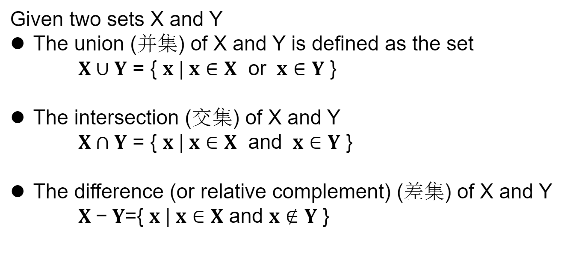 - 补集
U-A: U关于A的补集
集合分区
例：A={ {1,2},{3,4,5},{6} }
就是把一个集合内的元素划分为各个区域的小集合
集合叉乘
A={1,2}
B={3,4}
A×B={(1,3),(1,4),(2,3),(2,4)}
集合的势
就是集合中元素的个数
写做：|A|或#A
集合异或
AΔB=C
C集合包含的元素只能属于AB中的一个集合，不包括两个集合共有的元素，也不包括两个集合都没有的元素
命题
一个具有唯一真值的陈述句称为命题
命题之间的逻辑运算
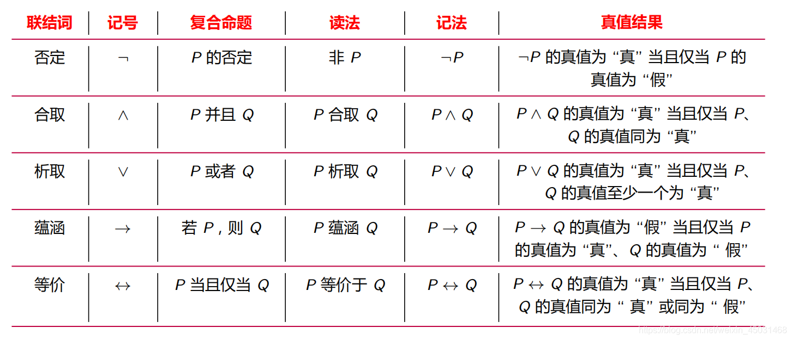
优先级
- 所有五个联接词的优先顺序为：否定，合取，析取，蕴涵，等价；
- 同级的联结词，按其出现的先后次序 (从左到右)；
- 若运算要求与优先次序不一致时，可使用括号；
- 同级符号相邻时，也可使用括号。
- 括号中的运算为最高优先级。
永真式和矛盾式
- tautology 永真式 整个式子的值永远为真
- contradiction 矛盾式 整个式子的值永远为假
逻辑等价
两个命题具有相同的真值表说明这两个命题逻辑等价
常用的等值式
偷了一手别人的图
出自：CSDN 白水baishui的文章
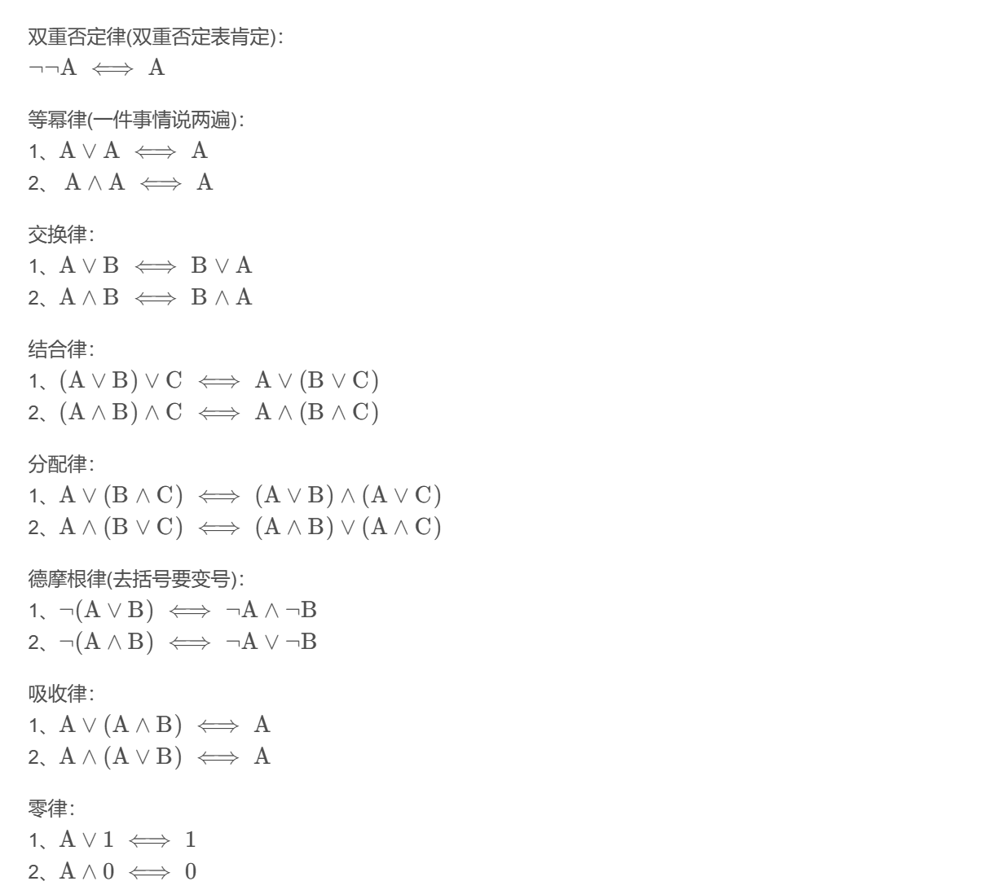
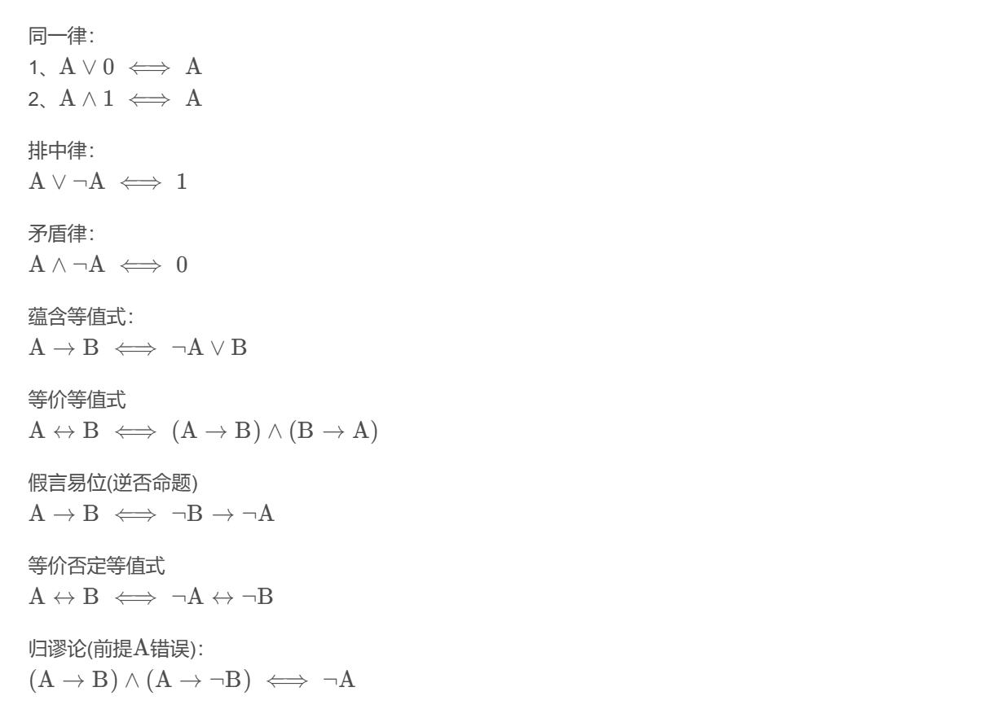
推论和推理规则
deductive reasoning 演绎推理
- 论证
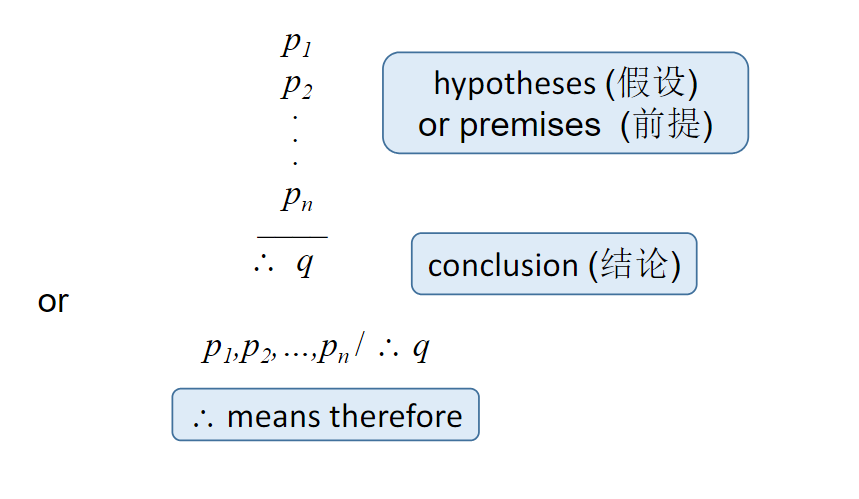
p1…pn都为真，则q为真，否则该论证无效 - 推理规则
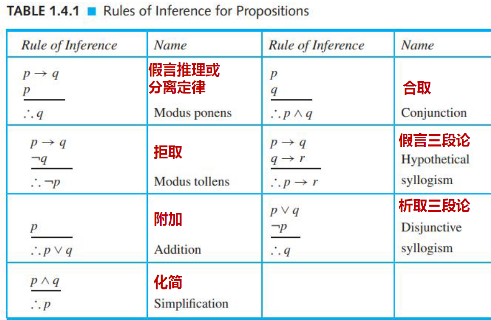
量词与量词语句
命题函数
如果P(x)是一条含有变量x的陈述句，令D是一个集合，此时P是一个命题函数（谓词）；
如果所有的x属于D，则P(x)是一个命题，此时D是P的论域的定义域（话语域）；
话语域规定了 x 的所有可选值
全称量词和存在量词
Universal Quantifiers 全称量词
- ∀x P(x) 全称量词语句
Existential Quantifiers 存在量词
- ∃x P(x) 存在量词语句
De Morgan’s Law of Logic 广义德·摩根定律
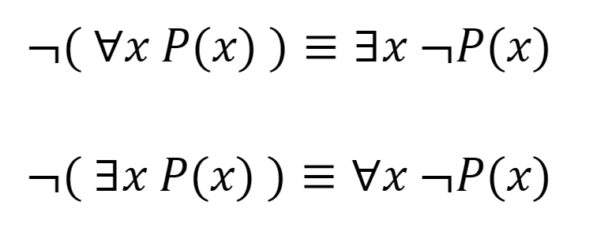
全称例化
- 全称例化
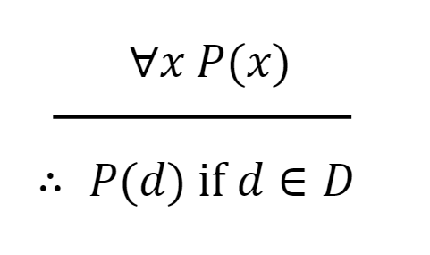 - 全称一般例化
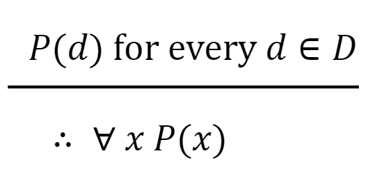
存在例化
- 存在例化

- 存在一般例化
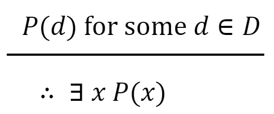
量词推理规则
- 带量化语句的论证
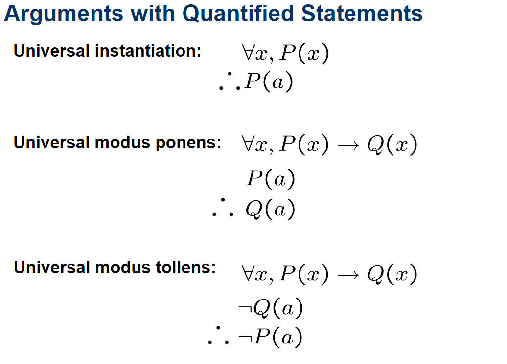
Nested Quantifiers 嵌套量词
- ∀x∀yP(x,y)
- ∀x∃yP(x,y)
- ∃x∃yP(x,y)
- etc.
Proofs 证明
证明一个语句的对错需要掌握与句子相关的定理，用定理来推论出语句的成立与否
Mathematical Systems 数学系统
- axiom 公理
经过人类长期反复的实践检验是真实的，大家普遍公认的、不需要由其他判断加以证明、且也不能由其他判断证明的命题和原理，例：太阳从东边升起；一小时有60分钟； - definition 定义
定义用于根据现有概念创建新概念，例：实数 x 的绝对值 |x| 在 x 为正或 0 时定义为 x，否则定义为-x - undefined term 未定义项
有些术语没有明确定义，而是由公理隐含定义的，例：给定两个不同的点，正好有一条直线包含它们（这不就是公理吗！！！） - theorem 定理
定理是已被证明为真的命题- corollary 推论
所谓 “推论”，是指从另一个定理容易得出的定理 - lemma 引理
为证明某个定理或解某个问题所要用到的命题
- corollary 推论
Direct Proofs 直接证明
定理的形式通常是
对于所有 x1,x2,x3,…,xn 如果 p(x1,x2,x3,…,xn) 那么 q(x1,x2,x3,…,xn)
Counterexamples 反例
用于证明全称量词语句不成立
Proof by Contradiction 反证法
通过假设 p 为真，结论 q 为假，然后利用 p 和-q 以及其他公理、定义、先前推导出的定理和推理规则，推导出一个矛盾，从而确立 pq
反证法有时也被称作间接证明
Proof by Contrapositive 逆否证明法
如果p -> q等价于-p -> -q，这中矛盾的特例叫做逆否证明法
Proof by Cases 分情况证明法
当原假设自然地分为各种情况时，就会使用分情况证明法
又叫分类讨论
有时候原假设可以分为一些小数量的有限情况，我们可以一一列举出来，这叫做穷举法
Proofs of Equivalence 等价证明法
p <-> q 等价于 （p -> q）∧ （p <- q）
那么我们如果要证明前者，就可以先证明后者，由于等价关系，证明了后者就等于证明了前者
Existence Proofs 存在性证明法
证明一个存在量词命题叫做存在性证明法，要求例举一个符合条件的值作为对该命题的证明
Resolution Proofs 消解证明法
如果p ∨ q并且-p ∨ r都为真，则q ∨ r为真
Principle of Mathematical Induction 数学归纳法
假设我们有一个命题函数 S(n)，它的论述域是正整数集。
假设
(1) S(1) 为真
(2) 对于所有 n >= 1，假设 S(n) 为真，并证明S(n + 1) 为真（可能会使用对S(n)的假设），那么对于每一个正整数 n，S(n) 都为真
(1)是基本步
(2)是归纳步
对于数列下标的小贴士
如果下标为用[]框起来的分数
则计算下标向下取整
Strong Form of Induction 强数学归纳法 和 Well-Ordering Property 良序性
Strong Form of Induction 强数学归纳法
归纳法： 要证明一个语句为真，我们要假设其直接前驱语句（immediate predecessor）为真
强归纳法： 要证明一个陈述为真，我们假定前趋语句（all of the preceding statement）都是真的
假设我们有一个命题函数 S(n)，它的话语域是大于或等于 ny 的整数集。
大于或等于 ny 的整数。假设
(1) S(n0) 为真；
(2) 对于所有 n > n0，如果对于所有 n0 <= k < n，S(K) 为真，那么 S(n) 为真。
那么对于每个 n >= n0 的正整数，S(n) 都为真
Well-Ordering Property 良序性
非负整数的良序性说明，每个非负整数的非空集都有一个最小元素
Quotient-Remainder Theorem 商和余数定理
如果 d 和 n 都是整数，且 d > 0，则存在整数 q（商）和 r（余数）。
满足 n=dq+r (O<=r<d)
此外，q 和 r 是唯一的；也就是说，如果
n=dq1+r1 (0<=r1<d)
且
n=dq2+r2 (0<r2<d)
则q1=q2，r1=r2
Functions,Sequences, and Relations 函数，序列，和关系
Function 函数
定义 3.1.1 设X和Y是集合。从X到Y的函数f是笛卡尔乘积XxY的一个子集，其性质是对于每个x∈X，正好有一个y∈Y，且(x,y)∈f
我们有时把从X到Y的函数f表示为f:X->Y
- X是f的定义域（domain）
- Y是f的陪域（codomain）
- {y|(x,y)属于f}是f的值域（range）
- 值域是陪域的一个子集
对于每个x∈X，正好有一个 y∈Y，其(x,y)∈f
这个唯一的值y就是f(x)
换句话说，f(x)=y是(x,y)∈f的另一种写法
感觉函数和编程语言的函数是一个意思（应该） - 如果一个函数对于所有的x1,x2∈X,如果f(x1)=f(x2)，x1=x2，那么这个函数是单射的
- 如果一个函数对于所有的y∈Y，存在x∈X能让f(x)=y，那么这个函数是满射的
- 一个又单射又满射的函数被称作是双射（bijection）的
- x的底数，表示[x]，是小于或等于x的最大整数；x的上标，表示[x]，是大于或等于x的最小整数
- 从X×X到X的函数称为X上的二元操作符
- 从X到X的函数称为X上的一元操作符
Arrow Diagram 箭头图
将X内元素和Y内元素的关系清楚表示出来
函数中一个x只能指向一个y
但是一个y可以被多个x指向
Inverse Function 反函数
假设f是一个X到Y的双射函数，那么{(y,x)|(x,y)∈f}是一个从Y到X的双射函数
这个新函数f-1，叫做f的反函数
Pigeonhole Principle 鸽巢原理
如果f是一个从有限集X到一个有限集Y的函数，且|X|>|Y|，那么f(x1)=f(x2)对于某些x1,X2∈X，x1!=X2
从较大集合到较小集合的函数不可能是注入式的。(域中必须至少有两个元素在代号域中具有相同的图像）
取余数
如果 x 是整数，y 是正整数，我们定义 x mod y 为 x 除以 y 的余数
Sequences and String 序列和串
Sequences 序列
序列s是一个函数，其定义域D是整数子集。
通常使用符号sn代替更一般的函数符号 s(n)，n称为序列的下标
如果D是有限集，我们称s为有限序列，否则，s为无穷序列
如果n是序列的下标，则序列s称为s或{sn}
符号sn表示序列s在索引n处的单个元素。
如果s是一个序列{sn}，其中n=1,2,3,…
s1 表示第一个元素、
s2 表示第二个元素、
sn 表示第n个元素
序列和数列不都差不多吗好无聊不写了
String 串
这不也是序列
X上的串（其中 X 是一个有限集合）是X中元素的有限序列
- 有限序列也称为串
- 没有元素的串称为空串，记为 A
- X*表示X上所有串的集合
- X+表示X上所有非空串的集合
- 字符串a的长度是a中元素的个数，a 的长度表示为 |a|
Relation 关系
从集合X到集合Y的(二元)关系R是笛卡尔积X×Y的子集，如果(x,y)∈R，我们用xRy表示x与y相关
如果X=Y，我们称R为X上的（二元）关系
- 函数、序列和关系之间的关系
- 序列 s 是一个函数，其域 D 是整数的一个子集
- 从X到Y的函数f是一种从X到Y的关系，具有以下性质：
- f的域等于X
- 对于每个x∈X，正好有一个y∈Y，使得(x,y)∈f
- 关系的简单定义
- 简单地指定哪些有序对属于该关系
R = {(Bill, CompSci), (Mary, Math), (Bill, Art), (Beth, History), (Beth, CompSci), (Dave, Math)} - 通过给出关系中的成员资格规则来定义关系
- 简单地指定哪些有序对属于该关系
- 集合内的关系
- 画一个有向图
- reflexive 自反的
- 定义：一个关系R在集合A上是自反的，如果对于每个a∈A，都有(a,a)∈R
- 判断方法：检查关系集合中是否包含了集合A中每个元素与自身的配对
- symmetric 对称的
- 定义：一个关系R是对称的，如果对于每一对元素(a,b)∈R，都有(b,a)∈R。
- 判断方法：检查关系集合中的每一对元素，看其是否有相对应的反向配对。
- antisymmetric 反对称的
- 定义：一个关系R是反对称的，如果对于每一对元素(a,b)∈R且a≠b，都没有(b,a)∈R
- 判断方法：检查关系集合中的每一对不同的元素，确保不存在反向配对
- transitive 传递的
- 定义：一个关系R是传递的，如果对于任何三个元素a,b,c，只要(a,b)∈R和(b,c)∈R，就有(a,c)∈R
- 判断方法：检查关系集合中是否每一对元素的传递连接都存在
- 传递性验证：计算关系矩阵R的平方，并检查平方后的矩阵中为1的元素是否在对应原始矩阵中也是1
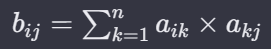 - 还有一种看传递性的方法：按从上到下，从左到右，逐一检查某行（例如a行）非对角线上的1元素， 定位到该1元素所在列，所对应的关系矩阵行， 检查该行所有的1元素（或只检查非对角线上的1元素）， 将这些1元素所在列的a行元素找出，判断是否都为1 都为1则，是传递关系； 但只要出现1个0，则不是传递关系
偏序符号好复杂我直接放图了- 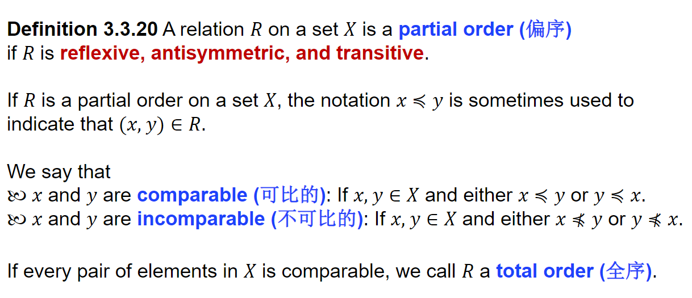
- 设R是一个从X到Y的关系；R的逆关系，记为R-1，是从Y到X的关系，定义为：R-1={(y,x)|(x,y)∈R}.
- 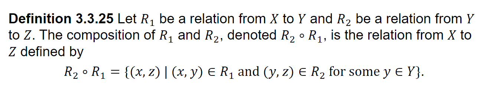
- Equivalence Relations 等价关系
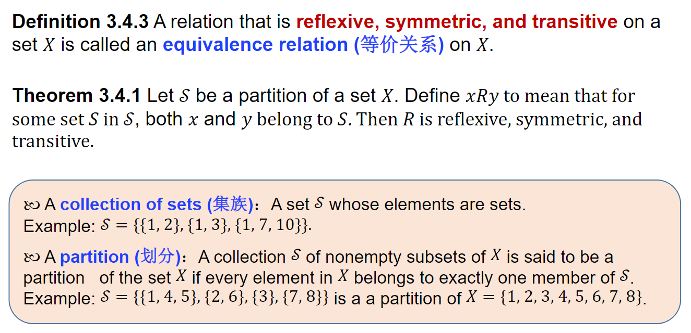
digraph 有向图
略
计数方法与鸽巢原理
基本原理
Multiplication Principle 乘法原理
如果一项活动可以分 t 个连续步骤进行，第 1 步可以用 n1 种方法完成，第 2 步可以用 n2 种方法完成，…，第 t 步可以用 nt 种方法完成，那么不同的可能活动的数量为 n1n2…nt
当一项活动按连续步骤进行时，我们将每个步骤的操作方法数量相乘
Addition Principle 加法原理
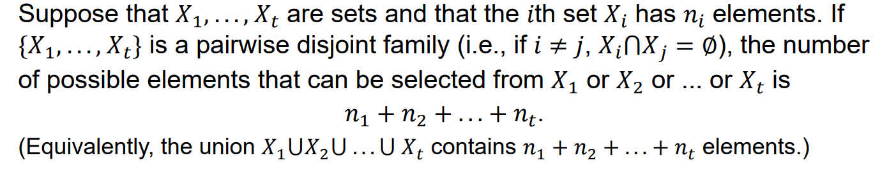
Inclusion-Exclusion Principle 容斥原理
容斥原理 如果X和Y是有限集，那么
|XUY|=|X|+|Y|-|XY|
排列组合
略
算法
欧几里得算法
其实就是辗转相除法求GCD（最大公因数）
然后两个数相乘等于他们的GCD和LCM相乘
时间复杂度计算 大-theta
- 多项式用最高项
- 累加一般用数列或者是数学归纳法的方法
- 累乘使用Stirling’s approximation：n! ≈ A * n^(n+1/2) (A is a fixed constant)
模运算
二进制以及M进制的运算
和十进制运算差不多
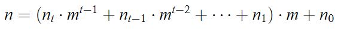
半群
(S,*)是一个幺半群，其具有结合律且具有单位元
- 单位元在和另一个元素进行这个运算时不会改变另一个元素的值
- 例：a是单位元，a,b属于S，则a * b = b * a = b
- 单位元在一个幺半群中唯一
如果一个幺半群同时具有交换律，那么称之为交换幺半群
如果一个交换幺半群满足以下性质，则此交换幺半群又被成为阿贝尔群或交换群
- a,b,e属于S,e为单位元，对任意的a，存在b使得 a * b=b * a = e
同态
是同态是一个重要的概念，它是指在两个半群间的一种特殊类型的函数，这个函数能够保持半群运算的结构。
具体来说，假设 S 和 T 是两个半群，其中的运算分别表示为 ∗ 和 ∘
一个函数 f:S→T 被称为一个同态，如果对于 S 中的任意两个元素 a 和 b，都有： f(a∗b)=f(a)∘f(b)
这个性质表明，当你在 S 中对元素 a 和 b 进行运算，然后将结果通过函数 f 映射到 T 中，得到的结果应该与你先将 a 和 b 分别通过 f 映射到 T 后再在 T 中进行运算的结果相同
- 设(H,∗) 为一个有限交换群，对于每一个 x∈H，考虑 x^n ，其中 n∈Z+
- 由于 H 是有限的，必存在 使n1!=n2，使得 x^n1 = x^n2
- 假设n1>n2，因为x 是可逆的，我们有 x^(n1−n2)=1
- 对于交换群H中的任意元素x，存在一个幂次 m使得 x^m = e
- 我们称最小的正幂次为x的阶。
- 我们有 x^ord(x)=e 并且 ord(x)≤#H
- 这是因为 x^0 =e,x,…,x^#H 是 #H 加 1 个元素，
- 因此必然有两个元素是重合的，这表明 ord(x)≤#H
环
环（Ring）是抽象代数中的一个基本概念，是一种代数结构。环的定义涉及到一个集合和定义在此集合上的两种运算，通常被称作加法（+）和乘法（·）。这个结构必须满足以下性质：
- 加法结合律：对于所有 a,b,c 在环中，有(a+b)+c=a+(b+c)
- 加法单位元：环中存在一个元素 0（称为零元素），对于所有 a 在环中，有 a+0=a
- 加法逆元：对于环中的每一个元素 a，存在一个元素b在环中，使得a+b=0（ b 称为 a 的加法逆元）
- 加法交换律：对于所有 a,b 在环中，有 a+b=b+a
- 乘法结合律：对于所有 a,b,c 在环中，有(a⋅b)⋅c=a⋅(b⋅c)
- 左分配律和右分配律：对于所有 a,b,c 在环中，有 a⋅(b+c)=a⋅b+a⋅c 和(a+b)⋅c=a⋅c+b⋅c
请注意，环不要求乘法有单位元（虽然如果有的话，这样的环被称为含幺环或单位环），也不要求乘法是可交换的（如果是的话，这样的环被称为交换环）。此外，环中的元素也不要求有乘法逆元（如果每个非零元素都有乘法逆元，这样的结构称为域）
简单来说，环是一种在加法下形成阿贝尔群，在乘法下形成半群，并且乘法对加法满足分配律的代数结构
环同态
环同态（ring homomorphism）是环论中的一个基本概念，它描述了两个环之间保持环结构的函数。具体来说，环同态是指从一个环 R 到另一个环 S 的一个函数 f ，满足以下性质：
- 加法保持：对于 R 中的任意两个元素 a 和 b，有 f(a+b)=f(a)+f(b)
- 乘法保持：对于 R 中的任意两个元素 a 和 b，有 f(ab)=f(a)f(b)。
- 单位元映射：如果 R 和 S 都有单位元（即乘法的单位元，通常记为 1），则 f(1R)=1S，其中 1R 是 R 的单位元， 1S 是 S 的单位元。
环同态不一定是双射的
质因式分解
就是把一个数拆分成各个质数的乘积
商集构造
基本步骤:
- 定义等价关系
在一个集合 $$A$$ 上定义一个等价关系 $$∼$$。等价关系是满足自反性、对称性和传递性的关系。 - 构造等价类
对于集合 $$A$$ 中的每个元素 $$a$$，其等价类 $$[a]$$ 定义为所有与 $$a$$ 等价的元素的集合，即 。 - 形成商集
集合 $$A$$ 关于等价关系 $$∼$$ 的商集是由 $$A$$ 中所有不同等价类的集合构成的，记作 $$A/∼$$。每个等价类是商集中的一个元素。
定义:
当在集合 $$S$$ 上给定一个等价关系时，我们得到一个新的集合（等价类集合）$$\widetilde{S} = {C_a | a \in S}$$（也记作 ），称为商集
我们可以使用符号 $$[a]$$ 来代表 $$C_a$$，那么 $$a \sim b$$ 当且仅当 $$[a] = [b]$$ 当且仅当
命题
对于任何等价关系，存在一个自然的满射 $$\pi: S \to \widetilde{S}, a \mapsto [a]$$